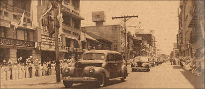

|
j
a v a s c r i p t |
May 9, 1942
"Three U.S. Warships Sunk in Battle" in the Coral Sea — Tribune. "Japanese naval units operating in the New Guinea area scored one of the greatest victories since the outbreak of the war of Greater East Asia" [Domei, May 8]. They claim to have sunk one California-type battleship and one Yorktown-type carrier, plus heavily damaging a British battleship of the Wasp type. Japanese losses are not mentioned. Homma came into Manila today and took up residence in the High Commissioner's Office. Japanese children carrying flags were assembled on both sides of Rizal Avenue to welcome him. Radio Tokyo later said that "thousands" lined the streets and "cheered him." I only heard kids' voices as I retreated into the Rizal Theater. One way the Japanese tried to drum up a crowd was to stop pedestrians from moving by blocking the sidewalks.

Homma passing through Avenida Rizal
Incidentally, Manila was without bread today. The Japanese took it all for its army and navy. Yes, the navy arrived today too, giving us our first glimpse of Japanese ships. |
|
|
|
|